pair_style edpd command
pair_style mdpd command
pair_style mdpd/rhosum command
pair_style tdpd command
Syntax
pair_style style args
style = edpd or mdpd or mdpd/rhosum or tdpd
args = list of arguments for a particular style
edpd args = cutoff seed cutoff = global cutoff for eDPD interactions (distance units) seed = random # seed (integer) (if <= 0, eDPD will use current time as the seed) mdpd args = T cutoff seed T = temperature (temperature units) cutoff = global cutoff for mDPD interactions (distance units) seed = random # seed (integer) (if <= 0, mDPD will use current time as the seed) mdpd/rhosum args = tdpd args = T cutoff seed T = temperature (temperature units) cutoff = global cutoff for tDPD interactions (distance units) seed = random # seed (integer) (if <= 0, tDPD will use current time as the seed)
Examples
pair_style edpd 1.58 9872598 pair_coeff * * 18.75 4.5 0.41 1.58 1.42E-5 2.0 1.58 pair_coeff 1 1 18.75 4.5 0.41 1.58 1.42E-5 2.0 1.58 power 10.54 -3.66 3.44 -4.10 pair_coeff 1 1 18.75 4.5 0.41 1.58 1.42E-5 2.0 1.58 power 10.54 -3.66 3.44 -4.10 kappa -0.44 -3.21 5.04 0.00 pair_style hybrid/overlay mdpd/rhosum mdpd 1.0 1.0 65689 pair_coeff 1 1 mdpd/rhosum 0.75 pair_coeff 1 1 mdpd -40.0 25.0 18.0 1.0 0.75 pair_style tdpd 1.0 1.58 935662 pair_coeff * * 18.75 4.5 0.41 1.58 1.58 1.0 1.0E-5 2.0 pair_coeff 1 1 18.75 4.5 0.41 1.58 1.58 1.0 1.0E-5 2.0 3.0 1.0E-5 2.0
Description
The edpd style computes the pairwise interactions and heat fluxes for eDPD particles following the formulations in (Li2014_JCP) and Li2015_CC. The time evolution of an eDPD particle is governed by the conservation of momentum and energy given by
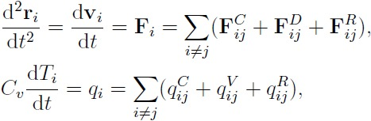where the three components of <font size=”4”>F<sub>i</sub></font> including the conservative force <font size=”4”>F<sub>ij</sub><sup>C</sup></font>, dissipative force <font size=”4”>F<sub>ij</sub><sup>D</sup></font> and random force <font size=”4”>F<sub>ij</sub><sup>R</sup></font> are expressed as
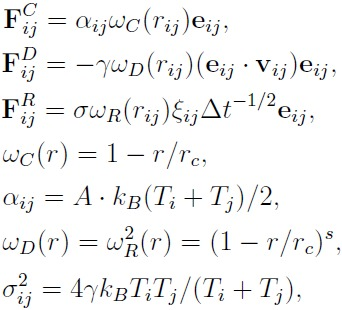in which the exponent of the weighting function <font size=”4”><i>s</i></font> can be defined as a temperature-dependent variable. The heat flux between particles accounting for the collisional heat flux <font size=”4”>q<sup>C</sup></font>, viscous heat flux <font size=”4”>q<sup>V</sup></font>, and random heat flux <font size=”4”>q<sup>R</sup></font> are given by
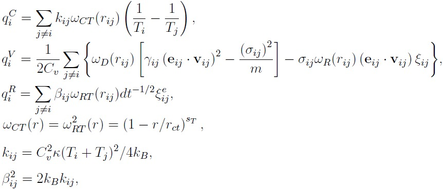where the mesoscopic heat friction <font size=”4”>κ</font> is given by
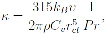with <font size=”4”>υ</font> being the kinematic viscosity. For more details, see Eq.(15) in (Li2014_JCP).
The following coefficients must be defined in eDPD system for each pair of atom types via the pair_coeff command as in the examples above.
- A (force units)
- gamma (force/velocity units)
- power_f (positive real)
- cutoff (distance units)
- kappa (thermal conductivity units)
- power_T (positive real)
- cutoff_T (distance units)
- optional keyword = power or kappa
The keyword power or kappa is optional. Both “power” and “kappa” require 4 parameters <font size=”4”>c<sub>1</sub>, c<sub>2</sub>, c<sub>4</sub>, c<sub>4</sub></font> showing the temperature dependence of the exponent <center><font size=”4”> <i>s</i>(<i>T</i>) = power_f*(1+c<sub>1</sub>*(T-1)+c<sub>2</sub>*(T-1)<sup>2</sup> +c<sub>3</sub>*(T-1)<sup>3</sup>+c<sub>4</sub>*(T-1)<sup>4</sup>)</font></center> and of the mesoscopic heat friction <center><font size=”4”> <i>s<sub>T</sub>(T)</i> = kappa*(1+c<sub>1</sub>*(T-1)+c<sub>2</sub>*(T-1)<sup>2</sup> +c<sub>3</sub>*(T-1)<sup>3</sup>+c<sub>4</sub>*(T-1)<sup>4</sup>)</font></center> If the keyword power or kappa is not specified, the eDPD system will use constant power_f and kappa, which is independent to temperature changes.
The mdpd/rhosum style computes the local particle mass density rho for mDPD particles by kernel function interpolation.
The following coefficients must be defined for each pair of atom types via the pair_coeff command as in the examples above.
- cutoff (distance units)
The mdpd style computes the many-body interactions between mDPD particles following the formulations in (Li2013_POF). The dissipative and random forces are in the form same as the classical DPD, but the conservative force is local density dependent, which are given by
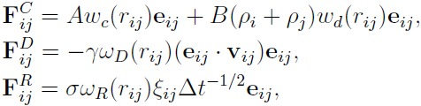where the first term in <font size=”4”>F<sup>C</sup></font> with a negative coefficient A < 0 stands for an attractive force within an interaction range <font size=”4”>r<sub>c</sub></font>, and the second term with B > 0 is the density-dependent repulsive force within an interaction range <font size=”4”>r<sub>d</sub></font>.
The following coefficients must be defined for each pair of atom types via the pair_coeff command as in the examples above.
- A (force units)
- B (force units)
- gamma (force/velocity units)
- cutoff_c (distance units)
- cutoff_d (distance units)
The tdpd style computes the pairwise interactions and chemical concentration fluxes for tDPD particles following the formulations in (Li2015_JCP). The time evolution of a tDPD particle is governed by the conservation of momentum and concentration given by
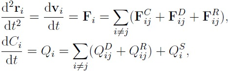where the three components of <font size=”4”>F<sub>i</sub></font> including the conservative force <font size=”4”>F<sub>ij</sub><sup>C</sup></font>, dissipative force <font size=”4”>F<sub>ij</sub><sup>D</sup></font> and random force <font size=”4”>F<sub>ij</sub><sup>R</sup></font> are expressed as
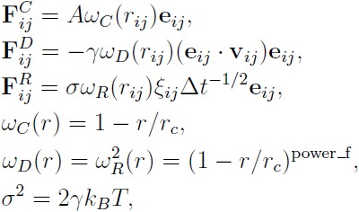The concentration flux between two tDPD particles includes the Fickian flux <font size=”4”>Q<sub>ij</sub><sup>D</sup></font> and random flux <font size=”4”>Q<sub>ij</sub><sup>R</sup></font>, which are given by
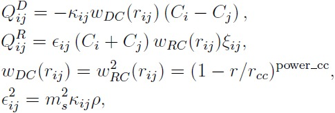where the parameters kappa and epsilon determine the strength of the Fickian and random fluxes. <font size=”4”><i>m</i><sub>s</sub></font> is the mass of a single solute molecule. In general, <font size=”4”><i>m</i><sub>s</sub></font> is much smaller than the mass of a tDPD particle <font size=”4”><i>m</i></font>. For more details, see (Li2015_JCP).
The following coefficients must be defined for each pair of atom types via the pair_coeff command as in the examples above.
- A (force units)
- gamma (force/velocity units)
- power_f (positive real)
- cutoff (distance units)
- cutoff_CC (distance units)
- kappa_i (diffusivity units)
- epsilon_i (diffusivity units)
- power_cc_i (positive real)
The last 3 values must be repeated Nspecies times, so that values for each of the Nspecies chemical species are specified, as indicated by the “I” suffix. In the first pair_coeff example above for pair_style tdpd, Nspecies = 1. In the second example, Nspecies = 2, so 3 additional coeffs are specified (for species 2).
Example scripts
There are example scripts for using all these pair styles in examples/USER/meso. The example for an eDPD simulation models heat conduction with source terms analog of periodic Poiseuille flow problem. The setup follows Fig.12 in (Li2014_JCP). The output of the short eDPD simulation (about 2 minutes on a single core) gives a temperature and density profiles as
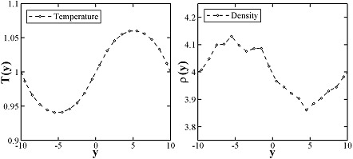The example for a mDPD simulation models the oscillations of a liquid droplet started from a liquid film. The mDPD parameters are adopted from (Li2013_POF). The short mDPD run (about 2 minutes on a single core) generates a particle trajectory which can be visualized as follows.
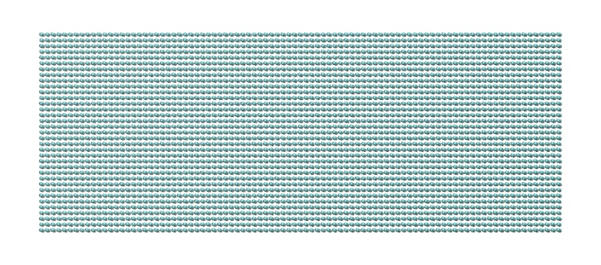 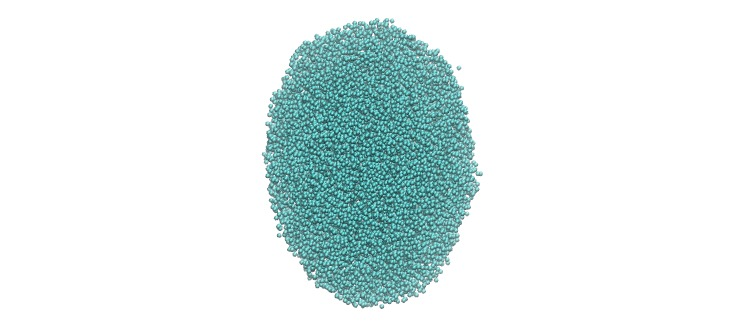{kind=link}
The first image is the initial state of the simulation. If you click it a GIF movie should play in your browser. The second image is the final state of the simulation.
The example for a tDPD simulation computes the effective diffusion coefficient of a tDPD system using a method analogous to the periodic Poiseuille flow. The tDPD system is specified with two chemical species, and the setup follows Fig.1 in (Li2015_JCP). The output of the short tDPD simulation (about one and a half minutes on a single core) gives the concentration profiles of the two chemical species as
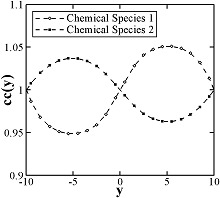Mixing, shift, table, tail correction, restart, rRESPA info:
The styles edpd, mdpd, mdpd/rhosum and tdpd do not support mixing. Thus, coefficients for all I,J pairs must be specified explicitly.
The styles edpd, mdpd, mdpd/rhosum and tdpd do not support the pair_modify shift, table, and tail options.
The styles edpd, mdpd, mdpd/rhosum and tdpd do not write information to binary restart files. Thus, you need to re-specify the pair_style and pair_coeff commands in an input script that reads a restart file.
Restrictions
The pair styles edpd, mdpd, mdpd/rhosum and tdpd are part of the USER-MESO package. It is only enabled if LAMMPS was built with that package. See the Making LAMMPS section for more info.